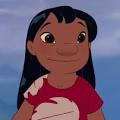
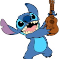
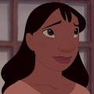
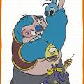
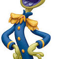
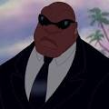
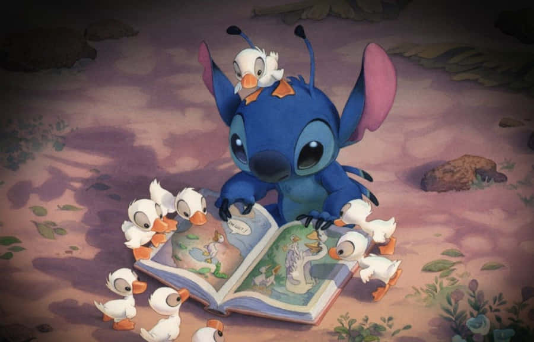
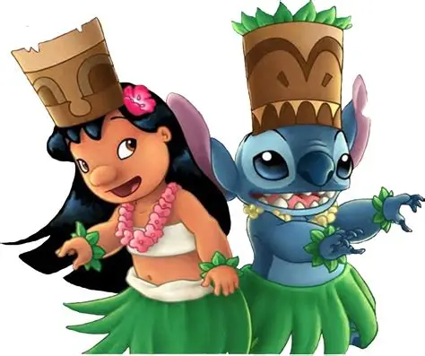

Aventuras Tropicais e Laços Inquebráveis
Explore a magia, a aventura e o verdadeiro significado de 'Ohana' nesta página dedicada ao aclamado filme de 2002 da Disney. Navegue pelas seções para descobrir mais sobre a história, personagens cativantes, curiosidades exclusivas e a trilha sonora inesquecível de Elvis Presley e cantos havaianos.
Sinopse
"Lilo & Stitch" conta a história de Lilo Pelekai, uma solitária garota havaiana que vive com sua irmã mais velha e tutora, Nani, após a trágica perda de seus pais. Lilo enfrenta dificuldades para se enturmar e anseia profundamente por um amigo verdadeiro. Em um dia especial, ela adota em um abrigo de animais o que pensa ser um cãozinho peculiar, dando-lhe o nome de Stitch.
No entanto, Stitch está longe de ser um animal comum: ele é na verdade o Experimento Genético Ilegal 626, uma criatura alienígena superdotada criada para destruição em massa que escapou da Federação Galáctica e caiu nas ilhas paradisíacas do Havaí. Caçado por seu criador, o excêntrico Dr. Jumba Jookiba, e pelo especialista na Terra, o Agente Pleakley, Stitch usa Lilo como disfarce e escudo para não ser capturado.
Ao longo de confusões hilárias e momentos emocionantes, Lilo apresenta Stitch ao calor havaiano e à filosofia de 'Ohana' — o princípio sagrado de que ninguém deve ser deixado para trás ou esquecido. Conforme vivenciam o significado de acolhimento, Stitch redefine seu próprio propósito, escolhendo o amor e a lealdade para proteger sua nova família terrestre.
Personagens Principais
Conheça as personalidades marcantes que dão vida a esta inesquecível história:

Lilo Pelekai
Uma garotinha havaiana de espírito livre, excêntrica e cheia de imaginação, apaixonada por fotografar turistas e ouvir os clássicos de Elvis Presley.
Protagonista
Stitch (Experimento 626)
Uma criatura geneticamente modificada à prova de fogo, balas e que pensa mais rápido que um supercomputador, mas descobre seu coração no Havaí.
Experimento 626
Nani Pelekai
Irmã mais velha e tutora resiliente de Lilo, que batalha dia após dia contra pressões sociais e financeiras para manter a custódia da irmã.
Guardiã Legal
Dr. Jumba Jookiba
Cientista alienígena autoproclamado "gênio do mal" do planeta Kweltikwan, criador biológico de Stitch e mestre em engenharia genética.
Cientista Genial
Agente Wendy Pleakley
O oficial monocular e extravagante da Aliança Galáctica, enviado para garantir que o planeta Terra (e seus mosquitos preciosos) permaneça a salvo.
Especialista na Terra
Cobra Bubbles
Um assistente social enigmático e imponente com passado na CIA, com postura rígida mas genuíno zelo pelo bem-estar e segurança de Lilo.
Assistente SocialElenco Principal (Vozes Originais)
Os talentos lendários por trás das vozes originais da animação clássica:
- Daveigh Chase Lilo Pelekai
- Chris Sanders Stitch (Experimento 626)
- Tia Carrere Nani Pelekai
- David Ogden Stiers Dr. Jumba Jookiba
- Kevin McDonald Agente Pleakley
- Ving Rhames Cobra Bubbles
- Zoe Caldwell Grande Conselheira Galáctica
- Jason Scott Lee David Kawena
- Kevin Michael Richardson Capitão Gantu
Trilha Sonora Oficial
A trilha de Lilo & Stitch é uma mistura mágica de canções havaianas tradicionais, hinos imortais de Elvis Presley e a trilha orquestral original composta pelo premiado Alan Silvestri (De Volta para o Futuro, Forrest Gump e Vingadores).
Galeria de Cenas
Momentos tocantes e divertidos que marcaram a história da animação:

Stitch e o Patinho Feio
A busca comovente do Experimento 626 por encontrar o seu próprio lar e família.

Surfando nas Ondas
Alegria contagiante ao som de Hawaiian Roller Coaster Ride pelas praias de Kauai.

Ohana é Para Sempre
O laço inseparável entre uma garota havaiana e seu alienígena de estimação.